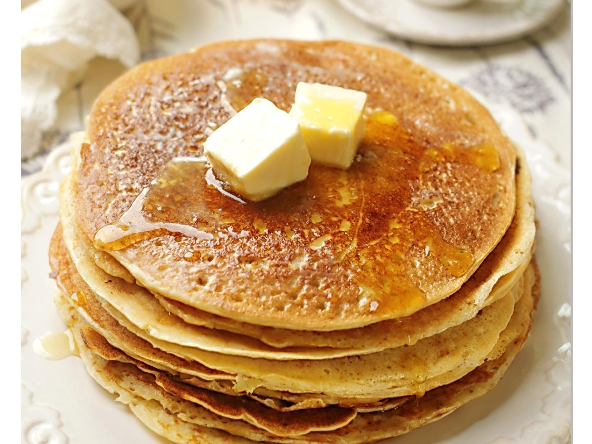

Блины – это пышные, пористые лепешки из жидкого, обычно дрожжевого теста. Тонкие блины принято называть блинчиками.
С оладьями есть небольшая путаница. В русской, украинской и белорусской традиции оладьи – это небольшие пышные лепешки из пресного или дрожжевого теста. А то, что в переводных британских и американских романах названо оладьями – это на самом деле панкейки: нечто вроде оладий, но крупнее и более сдобные.
Без хорошей сковородки в блинном деле никуда! От нее зависит чуть ли не половина успеха. Обычно считается, что лучшая сковородка для блинов – чугунная: у чугуна хорошая теплопроводность и высокая теплоемкость – сковородка нагревается постепенно и равномерно и так же постепенно и равномерно отдает тепло. Но чугунные сковородки тяжелые: чтобы равномерно распределить тесто, нужно держать сковородку на весу и крутить, а рука быстро устает. Современные сковородки с толстым дном обладают такой же отличной теплоемкостью, но они намного удобнее.
Очень важно заранее хорошо разогреть сковородку, чтобы блины получились румяными и хорошо прожаренными. Общее правило – блины нужно печь на умеренно сильном огне. Но все плиты разные, поэтому обычно делают пробу: наливают на сковородку первый половник теста и по результатам смотрят, прибавить или убавить огонь. Если вы готовите безглютеновые блины, например, на рисовой муке, очень важно жарить их на сильном огне на раскаленной сковородке, иначе блины будут рваться и ломаться.
От качества муки зависит, насколько плотными и эластичными будут блины. Рекомендуется выбирать муку с небольшим содержанием белка – не больше 10 г. Очень важно не вымешивать тесто долго – при долгом замесе активизируется глютен, и блины получаются резиновыми. Иногда лучше оставить в тесте комочки и потом процедить через среднее сито, чем вымешивать слишком тщательно.
Часто тесто должно хорошо выстояться (особенно если речь идет о тонких бездрожжевых блинчиках) – час и даже больше. Это нужно для того, чтобы набух крахмал, который сделает блины более прочными.
Блины делают и на свежем молоке, и на кисломолочных продуктах – кислом молоке, кефире, простокваше. Это влияет не только на вкус, но и на текстуру: блины на кефире или простокваше получаются более пышными и нежными.
Чтобы сделать блины менее калорийными и более тонкими, часть молока или все молоко иногда заменяют на воду. Есть рецепты, где блинное тесто замешивают на пиве или минеральной воде – такие блины получаются особенно пористыми из-за углекислого газа. А заварные блины на кипятке получаются тоненькими и нежными.
Яйца в блинах и оладьях делают тесто эластичным. Слишком много яиц добавлять не стоит: блины приобретут характерный привкус омлета. В среднем на 1 литр молока требуется 3-5 яиц.
В тесто для блинов и оладий иногда добавляют растительное или растопленное сливочное масло. Жир делает тесто немного более плотным и эластичным. Блины с добавлением масла легче снимаются со сковородки, но если добавить масла слишком много, блины будут резиновыми.
Блины должны быть сладкими или солеными? Зависит от рецепта и вашего личного вкуса. Но имейте в виду: сахар в блинном тесте отвечает не только за вкус, но и за румяный цвет. К тому же, он придает блинам нежность. Правило такое: чем меньше сахара, тем суше блин. А соль уравновешивает сладость, поэтому даже в тесто для сладких блинов советуем добавить щепотку соли.
Дрожжевые блины – пышные, ноздреватые. Готовить их немного дольше, чем тонкие блинчики, но дело того стоит: у дрожжевых блинов вкус намного объемнее, богаче. Дрожжи – это живые организмы, которые в процессе жизнедеятельности выделяют углекислый газ. В результате тесто увеличивается в объеме и становится более пышным, а блины получаются толстыми и пористыми.
Дрожжи для блинов можно брать и свежие, и сухие. Сухих дрожжей берут в 3 раза меньше, чем свежих: если в рецепте нужно 9 г свежих дрожжей, смело берите 3 г сухих.
Свежие дрожжи обычно разводят в части жидкости по рецепту. Многие по привычке подогревают жидкость для дрожжей, но ее можно взять и комнатной температуры. Сухие дрожжи можно просто добавить в муку.
Если дрожжи – биологический способ разрыхления, то разрыхлитель или сода – химический. Соду добавляют в тесто, в котором есть кислые ингредиенты, например, кисломолочные продукты. При соединении соды с кислотой выделяется углекислый газ, который разрыхляет тесто. Разрыхлитель уже содержит соду и кислоту, поэтому его можно добавлять в тесто на молоке.
Еще одно отличие дрожжей от химических разрыхлителей: основную работу дрожжи проводят до того, как тесто окажется на сковородке, а разрыхлитель, наоборот, начинает действовать как раз при высоких температурах.
Считается, что если в тесте уже есть масло, дополнительно смазывать сковородку не нужно. Но все-таки смазывание не повредит – жарить блины будет проще. На сухой сковородке блин просто равномерно потемнеет, а на жире получится с красивым поджаристым узором.
Можно налить на сковородку топленое или растительное масло и распределить его силиконовой кисточкой, а лишнее масло вытереть бумажным полотенцем. Еще один способ – разрезать пополам картофелину, наколоть половинку на вилку плоской стороной вниз, окунать ее в масло и смазывать поверхность сковородки. Тогда лишнего масла точно не будет. Можно также смазывать сковородку кусочком сала.
Равномерно распределить по сковородке тесто – это целое искусство! Придется немного постараться, но это как езда на велосипеде – один раз научитесь, и уже никогда не забудете. Хорошо разогрейте сковородку, возьмите ее в одну руку, а другой зачерпните половником тесто. Вылейте тесто в центр и сразу несколько раз быстро прокрутите сковородку, чтобы тесто растеклось ровным слоем по всей поверхности.
Когда переворачивать? Есть несколько признаков: верхняя сторона должна стать матовой, а края – потемнеть. Это знак, что блин пора переворачивать. Учтите, что вторая сторона блина поджарится быстрее, чем первая. После выпекания блины обычно смазывают сливочным или топленым маслом.
Любые оладьи и блины вкуснее всего с пылу с жару. Но бывает, что несколько блинов все-таки осталось на следующий день. Хранить их нужно в холодильнике, а если испечь за 3-4 дня, то можно заморозить, плотно завернув.
Чтобы разогреть блины, нужно вырезать круг из пергамента по диаметру дна сковородки. Сковородку лучше взять тяжелую, с крышкой. На дно сковороды выложить пергамент, на него положить блины, накрыть крышкой и поставить на слабый огонь примерно на 5 минут. Или отправить в духовку, разогретую до 100 °C (212 °F), на 5-7 минут.